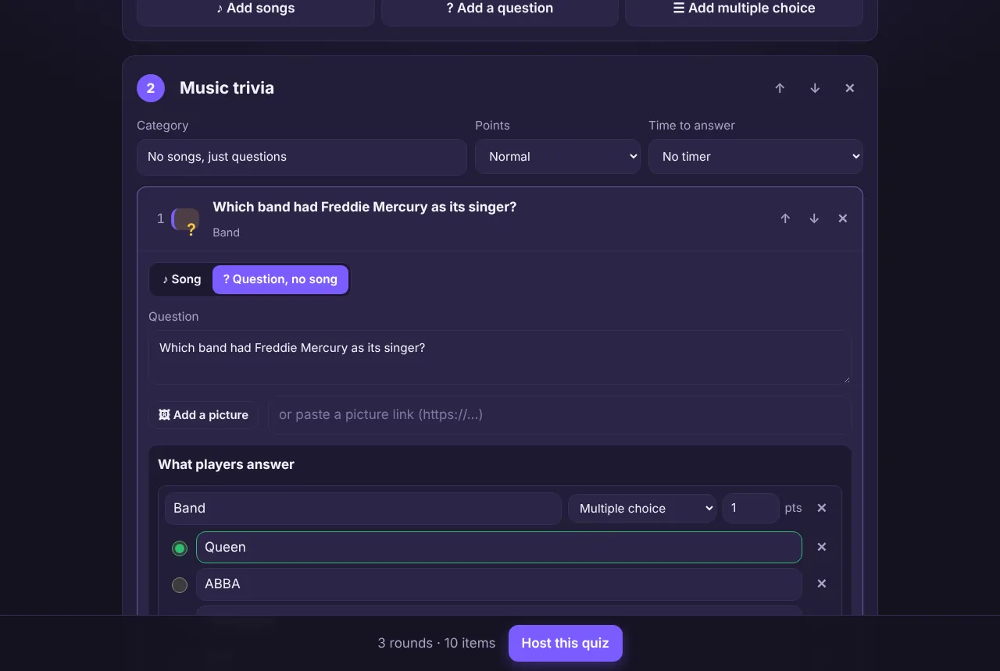
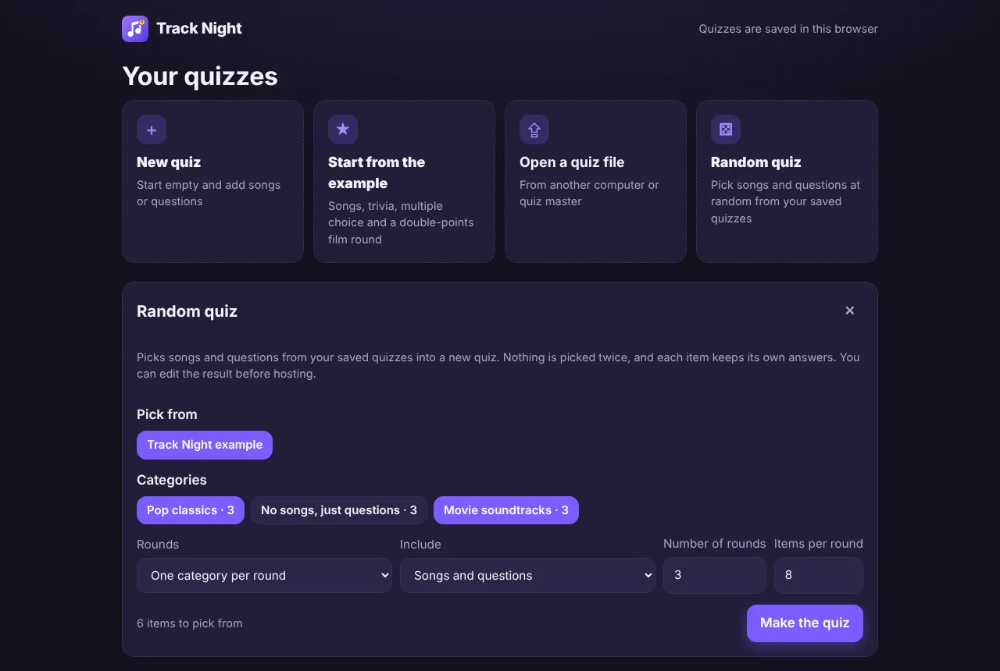
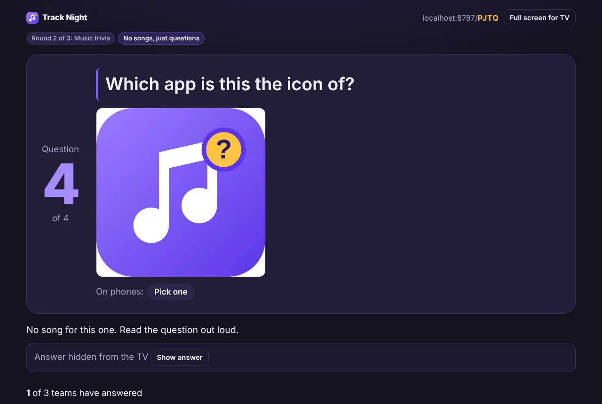
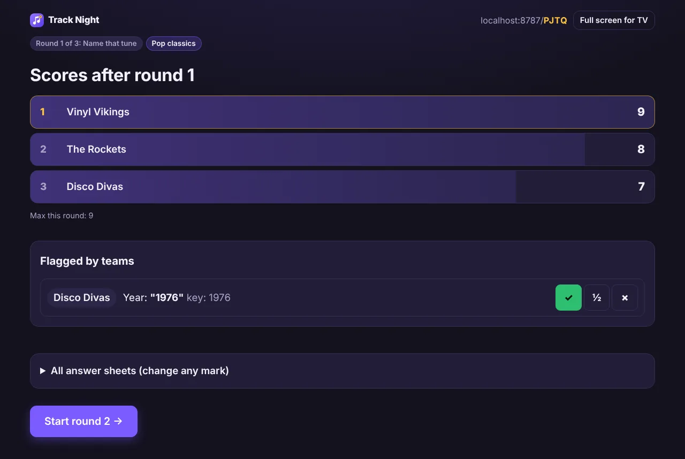
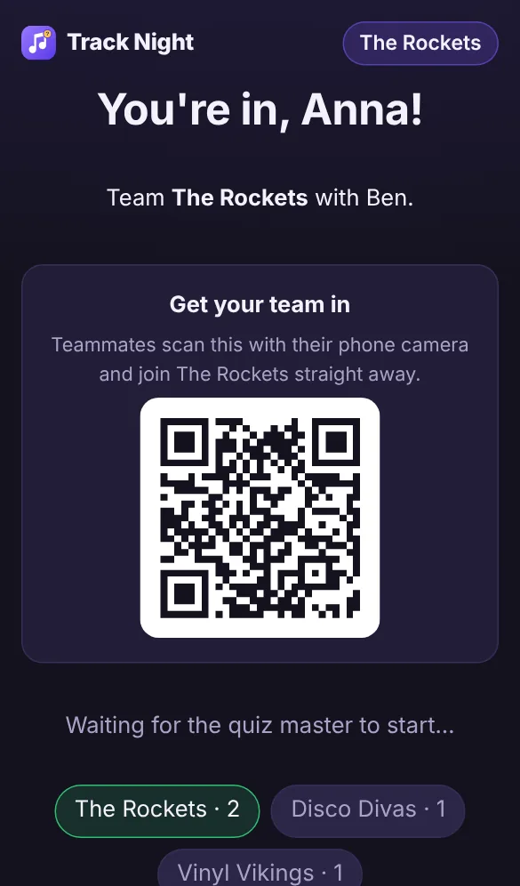
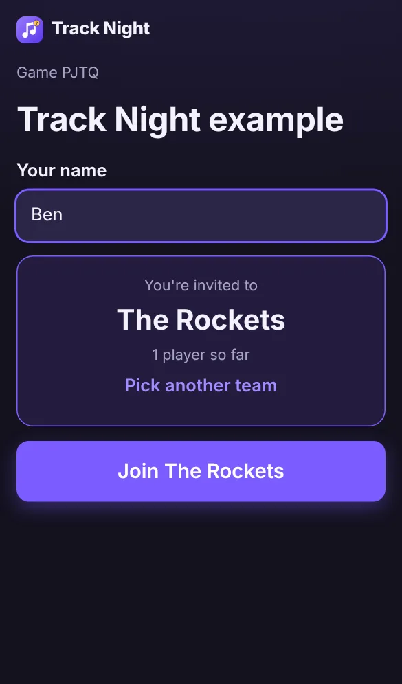
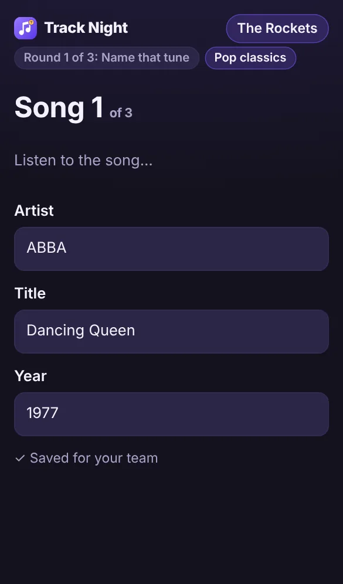
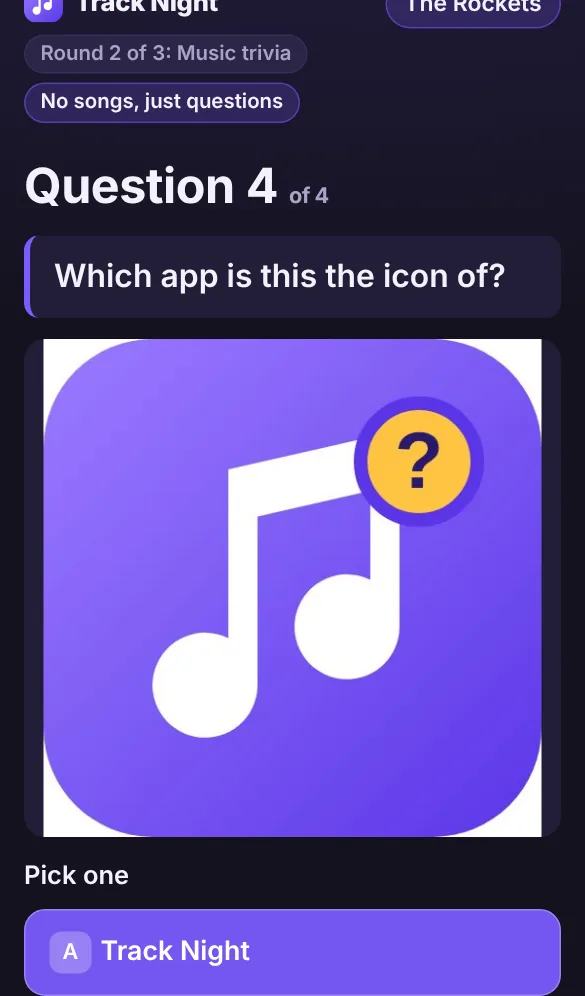
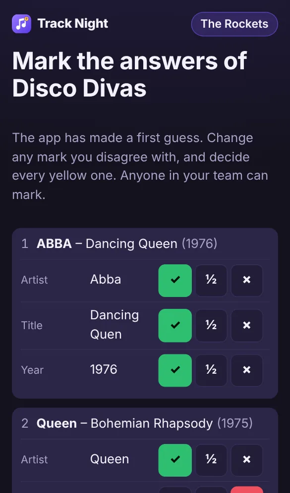

Track Night
Host a music quiz night. Everyone plays on their phone.
Track Night turns any living room, office or pub into a quiz night. Make the quiz exactly how you want it: songs you play from your own Spotify, trivia questions, pictures, multiple choice, double-points rounds and countdowns. Teams scan a QR code and answer on their phones. Answers are checked for you, or teams mark each other's sheets, and the scoreboard keeps itself.
How a Track Night works
One laptop or TV for the quiz master, one phone per player. Nobody needs to download anything or make an account to play.
- 1
Make your quiz
Start from the example or from scratch. Mix songs and trivia, add pictures, choose what players answer and how many points each answer is worth.
- 2
Teams join in seconds
Put the host screen on the TV. One player per team scans the QR code and taps New team; teammates scan the team code on that phone and only type their name.
- 3
Play and score
You play each song from your own Spotify and the TV shows each question. Teams answer on their phones, and after each round the answers are checked and the scoreboard updates.
See it in action
Screens from the current web version.









Made for a real quiz night
Everything a quiz master needs, and nothing players have to install.
- 100% your quizSongs, trivia, pictures and multiple choice in any mix. Ask for artist, title and year, or only your own question, like "Which TV show is this intro from?", with your own points.
- See every answerAfter each round, players see their answers next to the right ones, and the quiz master sees every team's answers by question or by team. Everything is there again at the end.
- Rounds your wayName each round, give it a category, make it double or triple points, or add a countdown that locks answers by itself.
- Easy team joiningScan the TV's QR code, tap New team, and teammates scan the team code on that phone. Players can switch team in the lobby.
- Forgiving answer checkingTypos, "The", accents and "feat." are handled. Close calls go to you, and years within one year earn half points.
- Peer review modeEach team marks the next team's sheet, and teams can flag a mark for the quiz master to decide.
- A library of quizzesKeep as many quizzes as you like, start from the example, duplicate last month's, or save one as a file to share.
- Random quizBuild a fresh quiz from songs and questions picked at random from your saved quizzes: one category per round or all mixed, with no repeats.
- Made for the TVFull-screen host view with big numbers, the question and picture, a countdown, and who has answered.
- Answers stay hiddenPlayers never receive the answer key, pictures only appear when their question starts, and the host screen hides the answer until you choose to show it.
Support
Questions, bug reports or ideas for the next version are all welcome.
Privacy
No accounts, no ads and no analytics. Quizzes are saved in your own browser, and game data is deleted when the game ends.
Read the privacy policyHow do teams join?
Everyone scans the QR code on the TV, or types the 4-letter code at the website. The first player in a team taps New team and names it. Their phone then shows a team code: teammates scan it and land straight in the team, so they only type their name.
Does it have to be about music?
No. A round can be all songs, all trivia, or a mix, and any question can have a picture and multiple-choice options. Songs are where Track Night shines, though.
Do players need to download an app?
No. Players join in their phone's web browser with the 4-letter code or the QR code. An iPhone app is planned as well.
Do I need Spotify Premium?
Track Night doesn't connect to Spotify, so you only need a way to play the quiz songs in order on your own speaker. The app exports Spotify links and a plain song list for that.
When is it out?
Track Night is in development. The web version comes first, then the iPhone app. Email to hear when it launches.
Where are my quizzes saved?
In the browser you built them in, pictures included. Clearing your browser data removes them, so save a quiz file to keep a copy or move it to another computer.